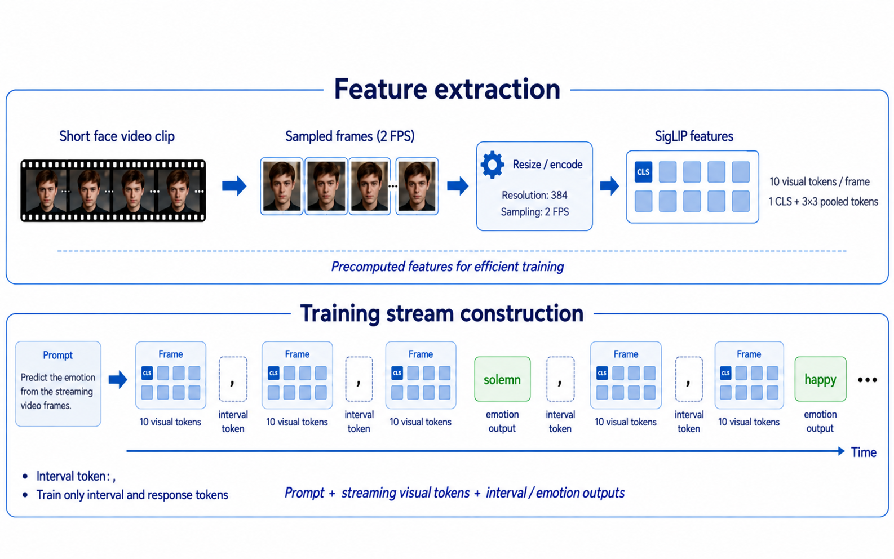
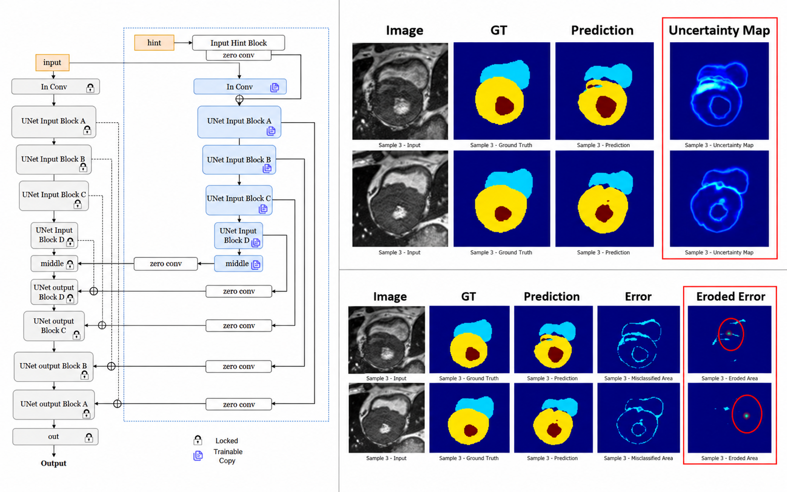
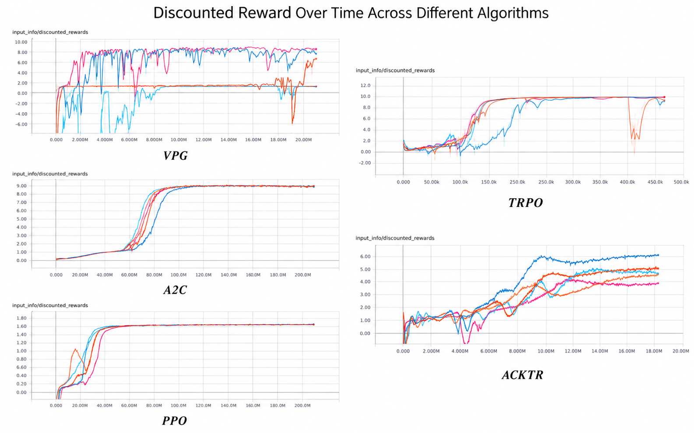

Research internship · GING AI · 2026
Streaming Multimodal Emotion Reasoning
Combined TinyLlama, SigLIP, and projector alignment for real-time video-to-language reasoning triggered by emotional state changes.
GitHub
AI & machine learning · Imperial College London
I am an AI and machine learning graduate interested in multimodal learning, computer vision, and medical image analysis.
My work spans streaming vision-language systems, controllable medical image segmentation, graph neural networks, and reinforcement learning. I enjoy turning open-ended research questions into reproducible systems and am interested in research and PhD opportunities in multimodal and medical AI.

assets/profile.jpgResearch internship · GING AI · 2026
Combined TinyLlama, SigLIP, and projector alignment for real-time video-to-language reasoning triggered by emotional state changes.
GitHub
MSc project · Imperial · 2025
Used external guidance to refine cardiac MRI segmentation, achieving 0.924 Dice on ACDC and 0.874 on M&Ms.
GitHub
BSc dissertation · Manchester · 2024
Compared five policy-gradient algorithms for quadrotor hover stability, convergence, and adaptability in Flightmare.
GitHub
Apr — Jun 2026
Built a lightweight streaming multimodal framework for low-latency video understanding and evaluated outputs across temporal alignment, fluency, semantic correctness, and perplexity.
Jun — Jul 2023
Developed a CNN-based clustering-parameter prediction model for dynamic smart-city data, improving segmentation accuracy and processing efficiency.
2024 — 2025
Imperial College London · Distinction
2021 — 2024
University of Manchester · First Class · Professor’s Prize for Outstanding Performance
For research opportunities, collaborations, or a conversation about my work:
ketong.ding24@alumni.imperial.ac.uk